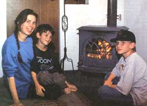
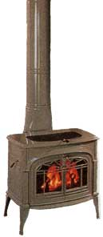
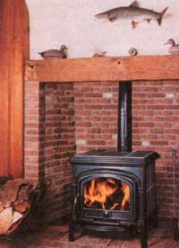
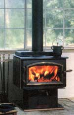
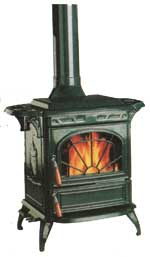
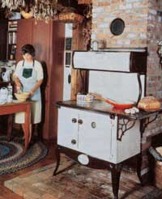

High-tech stoves come of age.
Not too long ago, I found myself rubbing shoulders with wood stove and fireplace manufacturers and retailers at a meeting in a North Carolina inn. We left the door open and the Charlotte blossoms drifted in on evening breezes. The weather was coolish, and, as a matter of no coincidence, there were fireplaces in all the main rooms of the inn, providing atmosphere even if the heat was going out the door. Significantly, the fireplaces were gas.
One thing I'm smart enough to figure out is that you can't rely on representatives of an industry to accurately inform you of the issues within that industry. Vested interest runs too strong. Fireplace people want to make money like anybody else. But for a group of salespeople there's something pretty down to earth about the folks who show up at the annual Hearth Products Association trade show. A lot of Canadian manufacturers and retailers were floating around and a lot of hiking boots and cowboy boots walked the floors.
It is interesting to find out how they regard the EPA now that EPA regulations that transformed the wood stove industry are four years old. They had to invest a lot of money to improve their products. But now, people in the industry say they've done it and the EPA isn't such a bad guy. Finally, competition between stove makers is centered now on who can make the high-tech stove with the least emissions.
These are stoves that use sophisticated combustion-air and smoke channels to create an engineered fire that preheats the secondary air supply and pulls it in like a blow torch to burn smoke particulates before they reach the atmosphere. And the industry designs products in constant anticipation of stricter emissions controls. To summarize the prevailing attitude: "We can make a clean-burning, efficient product. We have the technology. We spent the money to make it work, and now we're proud to offer you high-tech stoves."
The cost of stoves is coming down again and the cost to the environment is also significantly reduced. The industry may have been quite reluctant to change stoves to meet EPA standards. But EPA regulations are not going away, and if anything they look likely to become stricter. The result of regulating wood stoves has been twofold: the products we have access to are better (and more expensive), and the number of manufacturers and retailers have become fewer.
The wood stove industry has been part of the same kind of merger mania that has swept through other industries in the U.S. from bookstores to coffee shops. In September 1995, CFM International, Inc. bought Huntington, Indiana's Majestic Products, the leading U.S. manufacturer of prefabricated fireplace systems, for $66.6 million. Canada's largest fireplace manufacturer, CFM Majestic, Inc., bought Vermont Castings, Inc. based in Bethel, Vt. Employment at the new company is approximately 1,290 people. That's getting to be a good-sized company. Vermont Castings has now started making outdoor furniture (presumably to go with the BBQs they've been making?). The idea seems to be to diversify so everybody can try to keep Home Depot from putting them out of business. The big guys are eating up Mom & Pop.
It's a disturbing trend. The question is, are we concerned about keeping manufacturers in business or are we concerned about having a good product? Health advocates and environmentalists say, either way, we've past the point we can justify continued pollution. Manufacturers may be fighting it, but they have anticipated the growing opinion that current standards do not adequately protect public health.
This year the EPA was successfully sued by the American Lung Association, which argued that the agency regulations on pollution were not strict enough to be in compliance with the Federal Clean Air Act. The American Lung Association contends that 60,000 people die each year as a result of particulate pollution. The ALA lawsuit resulted in a court-ordered review of particulate-matter standards.
The EPA has already recommended a possible range of new standards and is under a federal court order to adopt new standards for particulate pollution by January 1997. A recent National Resources Defense Council study places even more blame on particulates for increasing the rate of pollution-related death.
"Tiny particles of pollution from tailpipes, power plants, wood stoves and other sources cause 64,000 premature deaths every year from lung and heart disease," according to the study.The main sources of particles (smaller than 2.5 microns) are power plants, industrial boilers, and gas- and diesel-powered vehicles, like city bus fleets. In fact, wood stoves may be a minor part of the national air quality issue. Current federal law regulates particulates with a diameter of 10 microns or less. Ten microns is about one-seventh the width of a human hair.
The EPAs staff paper calls for the development of standards for fine particulate matter of 2.5 microns, specks that are thought to be more hazardous than larger particles. They are so small they are more like gases and can lodge deep inside the lungs. The proposed standards do not target wood stoves in particular, but ambient air. The best wood stoves on the market now are already in compliance with these proposed standards.
Washington is theonly state with emission standards more stringent than the national standard (4.5 grams per hour). But in February, a Kent, Washington, lab owner was arrested for falsifying test reports on wood stoves so they could meet state pollution-emissions standards.So the transition to efficient, clean-burning stoves hasn't been quite as smooth as industry leaders would like us to believe. Most likely, manufacturers would stop making environmentally sound stoves tomorrow if they had the chance.
But some retailers believe the EPA regulations have merely encouraged intelligent use of good technology, though saying so might not make you popular among your peers. One retailer commented on condition of anonymity:"If we don't have good wood stoves, we'll have a situation in some parts of the U.S. where wood burning is banned altogether. The [EPA- regulated] products really are remarkably better.
" When I wandered out to the trade show's "burn-unit;" as the HPA insisted on calling it (inevitably, this phrase conjures up images of a hospital room full of burn victims), to see their products in action, I found that the good stoves look basically the same as last year and even the same as the year before. The difference is that their efficiency has been creeping up, their emissions creeping down, while the prices have remained relatively the same if you factor in inflation. Slowly over the last four years, new technological advances throughout the industry have created a new generation of efficient, environmentally sound fireplaces and wood stoves.
The industry, like all industries, has essentially standardized its product. MOTHER readers often write in asking which stove to buy from whom. Except for trademark quirks in technology and design, you can find similarly efficient stoves in a lot of places. It depends on if you want to heat a good-sized house, or just a room or shop. Go down to your local hearth store resolving not to let them sell you a gas stove, and you'll probably find good stoves available from any number of manufacturers. If your primary concern is environment, then you'll probably want the latest, greatest technology and a few relatively new developments are worth mentioning. According to the EPA, Quadra's Fire series of wood stoves is the nation's cleanest burning, with emissions ratings of 2.1-2.7 grams of particulate per hour. Quadra's burn system burns and reburns gases and smoke. You can actually see it burning gases in the top part of the stove. (Quadra Fire is made by Aladdin Steel Products, Inc. 1-800-234-2138.) Another high-tech wonder is Majestic's Pure Energy fireplace (905-670-7885) which draws out side air from the air-cooled chimney system into the sealed firebox. The most significant development in new stove technology is the massive decrease in emissions from noncatalytic stoves. There are now stoves on the market that are burning almost as clean without catalytics as the more expensive stoves with catalytics.
If your primary concern is design, Waterford (603-298-5030), Hearthstone (802-888-5232), and Vermont Castings (802-234-2362) make some of the most beautiful cast-iron and soapstone stoves. If you're interested in good, solid, clean- burning, fairly reasonably priced solid stoves, Travis (206-827-9505) has a long line of simple stoves, and many other manufacturers have good ones for sale too.
If your primary concern is design, Waterford (603-298-5030), Hearthstone (802-888-5232), and Vermont Castings (802-234-2362) make some of the most beautiful cast-iron and soapstone stoves. If you're interested in good, solid, clean- burning, fairly reasonably priced solid stoves, Travis (206-827-9505) has a long line of simple stoves, and many other manufacturers have good ones for sale too.
Other brand new products on the market this year include gimmicky accessories such as remote temperature controls and battery packs for pellet stoves (in case of electrical outage). Whittfield (206-757-9739) is making a pellet-burning barbeque grill, and Hamer (304-453-6381) is producing flavored (hot hickory smokers, hot cherry, and honey oak) BBQ pellets.
And speaking of new and smart things to do with pellets, Lignetics (1-800-286-5943) is now making the Pres-to Logs (logs made, like pellets, of wood waste). But Heat-N-Glo (612-890-8367) gets the award for most inventive 1996 combination. The direct-vent Heat-N-Cool is a combination heater and air conditioner. The air conditioner is situated beneath the (gas) hearth. Both use the same outside vent. Gas is the thing. The EPA and Home Depot combined couldn't be more of a threat to the wood stove
Many stove makers are diversifying their products to combat the megastore massacre of Ma & Pa businesses. While larger companies like Vermont Castings are selling everything from barbeques to outdoor furniture, Waterford Irish stove makes are as traditional as ever.
Gas
According to HPA, gas-burning units continued to increase their share of total sales in the industry, jumping from 61 percent in 1994 to 67 percent in 1995. Vented appliances increased by 3 percent, unvented appliances by 31 percent, while sales of pellet-burning appliances declined by about 36 percent, and sales of other woodburning stoves decreased by 28 percent. Gas logs, according to the HPA, are the most popular consumer hearth product. Fake logs still look like fake logs, and no matter what they do to make flames dance, gas flames still look like gas flames.
Manufacturers try to compensate with new bizarre added features like scent tubes and popping sounds they call "crackler" hidden inside a brass matchbox at the side of the hearth. The cost of high-tech wood stoves can go upwards of $3,000, while the cost of good gas stoves hover around $1,500. The fact is, gas stoves are cheaper to buy and cheaper to use. Yes, we've found huge oil reserves, but that doesn't all of a sudden make renewable energy a bad idea. It's not just that a gas fire is to a log fire what Top Ramen is to fresh pasta, it's just shortsighted to go on heating and producing energy with nonrenewable resources. Gas vent-free stoves are the latest moneymaker for hearth retailers. The real advantage, aside from low cost, is design flexibility since they literally need no chimney or outside vent.(Among the new designs I saw at the trade show was a coffee- table fireplace-a glass-encased fireplace that also serves as a table in the center of a sunken living room.)
Vent-free stoves use catalytic technology. Like an auto-emissions converter, stove catalytics contain rare earth elements that force smoke to burn at a low temperature, reducing noxious, partly burned hydrocarbons to benign carbon dioxide and water. Despite the initially cheap cost, catalytics have to be replaced when they wear out and the long term costs may be higher than dealers lead you to believe. Prices for unvented logs are around $400. The fireplaces go for $700 to $1,000.
Dealers are defending vent-free logs and stoves like crazy because it's a moneymaking product for them. It's one of the most affordable heating options available and has been selling well. But the use of this technology in the home immediately raises a number of serious questions. Do these stoves really have zero emissions as the manufacturers claim? If so, why are they illegal in eight states? (Alaska, California, Massachusetts, Minnesota, Montana, New York, Utah, and some counties in Colorado prohibit the use of vent-free gas logs.)
Studies conducted by the American Gas Association (GAMA) have found the product to be perfectly safe. (GAMA consists of manufacturers who sell the product.) GAMA claims the units are inherently safe since they are equipped with an oxygen-depletion sensor (ODS) pilot system. It has an automatic shutoff valve which shuts the gas flow off should the pilot extinguish. What's more, GAMA says, "There are no documented deaths associated with emissions (carbon monoxide or other emissions) from these products."
Despite the potential for profits, some manufacturers have refused to make unvented gas products, and some stores have refused to sell the products citing safety and health concerns. Much to the dismay of GAMA, these boycotting merchants and manufacturers believe even low-level emissions from the stove cause unsafe combustion fumes and headaches from carbon monoxide. The allowable level of carbon monoxide is 35 ppm. Levels have been known to exceed this, however, in new, tightly constructed homes that rely on vent-free gas products for heating. Some stores and manufacturers place warnings on the stove advising stove owners to operate the stove with a window cracked. This goes against the logic of heating a home for a reasonable price. (Ventless stoves also increase humidity.
Critics say the humidity level is such that it promotes mold and mildew and encourages rot and decay in houses.) The ODS does shut the unit off when it depletes oxygen to an unsafe level. But it doesn't prevent fumes from being released in the home. Ventless products have created a market for a new product: the carbon monoxide detector which goes for $50.
Carbon monoxide detectors? Vent-free gas logs? Coffee-table fireplaces? Remotecontrol flames? Okay, but give me my old wood stove any day.
|
 Mark Rousseau Barbara Sussman and her sons Spencer (on lap) and Max, of Hoosick Falls, NY, warming up in front of their Jotul steel-enamel wood stove from Norway |
 Hearthstone Vermont Castongs's Encore wood stove in sand porcelain enamel |
 Hearthstone's Phoenix high-tech, non-catalytic wood stove |
|
 Quadra Fire 1900 high-tech wood stove |
 Waterford OSA Irish wood stove |
 Waterford Stanley wood cook stove |